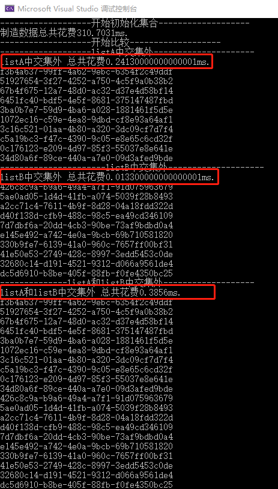
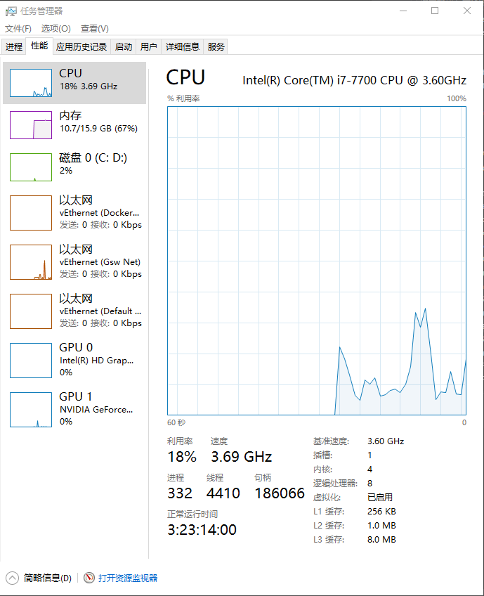

在GitHub上有个项目，本来是作为自己研究学习.net core的Demo，没想到很多同学在看，还给了很多星，所以觉得应该升成3.0，整理一下，写成博分享给学习.net core的同学们。
项目名称：Asp.NetCoreExperiment
项目地址：https://github.com/axzxs2001/Asp.NetCoreExperiment
今天先分享几个对集合知识点。
两个集合对比代码：
1 static void Main(string[] args)
2 {
3 var leftKes = new List<string>() { "111111", "222222", "333333", "444444" };
4 var rightKes = new List<string>() { "333333", "444444", "555555", "666666" };
5
6 Console.WriteLine("Left集合");
7 Console.WriteLine(string.Join(',', leftKes));
8 Console.WriteLine("-------------------------------------");
9
10 Console.WriteLine("Right集合");
11 Console.WriteLine(string.Join(',', rightKes));
12 Console.WriteLine("-------------------------------------");
13
14 Console.WriteLine("Left多的 ");
15 Console.WriteLine(string.Join(',', leftKes.Except(rightKes)));
16 Console.WriteLine("-------------------------------------");
17
18 Console.WriteLine("Right多的 ");
19 Console.WriteLine(string.Join(',', rightKes.Except(leftKes).ToList()));
20 Console.WriteLine("-------------------------------------");
21
22 Console.WriteLine("Left和Right交集 ");
23 Console.WriteLine(string.Join(',', rightKes.Intersect(leftKes)));
24 Console.WriteLine("-------------------------------------");
25
26 Console.WriteLine("Left和Right并集 ");
27 Console.WriteLine(string.Join(',', leftKes.Union(rightKes)));
28 Console.WriteLine("-------------------------------------");
29
30 Console.WriteLine("Left和Right对称差集 ");
31 Console.WriteLine(string.Join(',', leftKes.Union(rightKes).Except(rightKes.Intersect(leftKes))));
32 Console.WriteLine("-------------------------------------");
33
34 }
运行速度测试代码：
1 static void Test()
2 {
3 Console.WriteLine("-------------------开始初始化集合-------------------");
4 #region 制造数据
5 var watch = new Stopwatch();
6 watch.Start();
7 var listA = new List<string>();
8 var listB = new List<string>();
9 for (int i = 0; i < 1000000; i++)
10 {
11 var id = Guid.NewGuid().ToString();
12 listA.Add(id);
13 }
14 listB.AddRange(listA);
15 //制造B的差异数据
16 for (int i = 0; i < 10; i++)
17 {
18 var tick = DateTime.Now.Ticks;
19 var random = new Random((int)(tick & 0xffffffffL) | (int)(tick >> 32));
20 var index = random.Next(1, 100000);
21 listB[index] = Guid.NewGuid().ToString();
22 }
23 watch.Stop();
24 TimeSpan span = watch.Elapsed;
25 Console.WriteLine("制造数据总共花费{0}ms.", span.TotalMilliseconds);
26 #endregion
27
28 #region 比较
29 Console.WriteLine("-------------------开始比较-------------------");
30 Console.WriteLine("-------------------listA中交集外---------------------");
31 watch = new Stopwatch();
32 watch.Start();
33 var listD = listA.Except(listA.Intersect(listB));
34 watch.Stop();
35 span = watch.Elapsed;
36 Console.WriteLine("listA中交集外 总共花费{0}ms.", span.TotalMilliseconds);
37 foreach (var item in listD)
38 {
39 Console.WriteLine(item);
40 }
41 Console.WriteLine("----------------------listB中交集外--------------------");
42 watch = new Stopwatch();
43 watch.Start();
44 var listE = listB.Except(listA.Intersect(listB));
45 watch.Stop();
46 span = watch.Elapsed;
47 Console.WriteLine("listB中交集外 总共花费{0}ms.", span.TotalMilliseconds);
48 foreach (var item in listE)
49 {
50 Console.WriteLine(item);
51 }
52 Console.WriteLine("--------------listA和listB中交集外-------------------");
53 watch = new Stopwatch();
54 watch.Start();
55 var listF = listA.Concat(listB).Except(listA.Intersect(listB));
56 watch.Stop();
57 span = watch.Elapsed;
58 Console.WriteLine("listA和listB中交集外 总共花费{0}ms.", span.TotalMilliseconds);
59 foreach (var item in listF)
60 {
61 Console.WriteLine(item);
62 }
63 #endregion
64 }对比的运行时长结果：

我的配置是：
